[before the art show]
due day一周前
我今天朕要宠幸谁好呢.
due day12小时前
作业A:叫爸爸
作业B:叫爸爸
…………………………爸爸!!!!
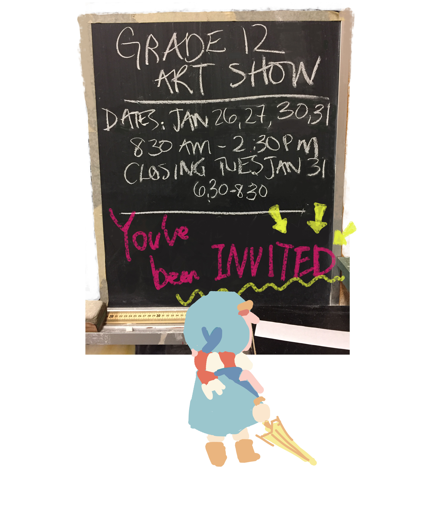
期末了,就算我的vita酱放在了枕边我都没有时间打p4g了哭哭.
我art show的主人公是小春日哦!!
前两天查看了下旧博文…这孩子也要过两岁生日了,时间过得太快了.
{kind=link}
[the art show]
各位新年好.
这个学期美术课大部分的时间都在准备这个show,在这里做个总结(唠嗑).
以及赶上申请大学准备作品集也是这段时间,试了各种不熟悉的东西.
虽然多半被画室的老师否了.
主角是我家的小春日,画得又有些小孩子.
不是很现实的红发打扮,然而却有代表有些nerd的眼镜.在故事里的设定也是藏在人群里的超强NPC,拿它来当主角再适合不过了.
Art show是在学校的theater,黑色的背景再加上自带的灯,整体的效果真的是很不错.
因为我有带声音,所以老师让我摆在了大门口.
超豪华待遇啊!!!
然而我的东西最乱啊!!!!(抱头遁地.
一进门看到的是我的短片.
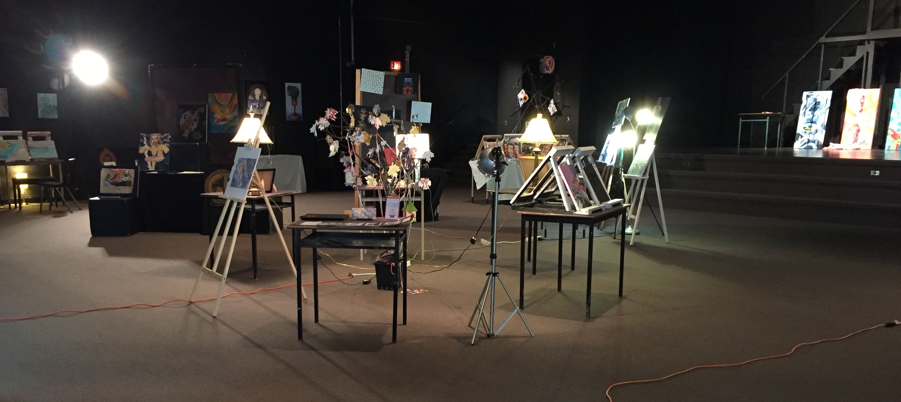
和我的树.
(啊…老师总是忘记把我的电脑打开……)
{kind=link}
【Wandering】
啊我把电脑打开了w.
{kind=link}
(↓顺便一提把明信片也放在了这个桌子上发放↓)
(真的要发不出去了啊哈哈我已经开始练习以叠纸牌的方法叠明信片了x)
【b站存了个有声音的档】
正式挑战了动画!!!
是小春日在雨中奔跑.先是小春日本体——
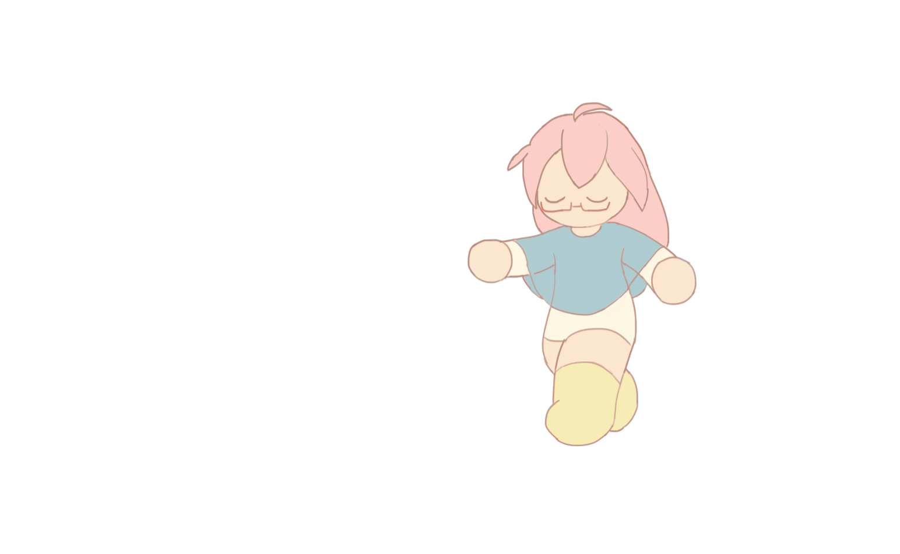
{kind=link}
然后是背景的定格动画.
去年学了在摄影棚中照相,高档的器材不玩一次怎么能算美术课毕业.
借此机会借来了灯与架子.
(↓我的脚↓)
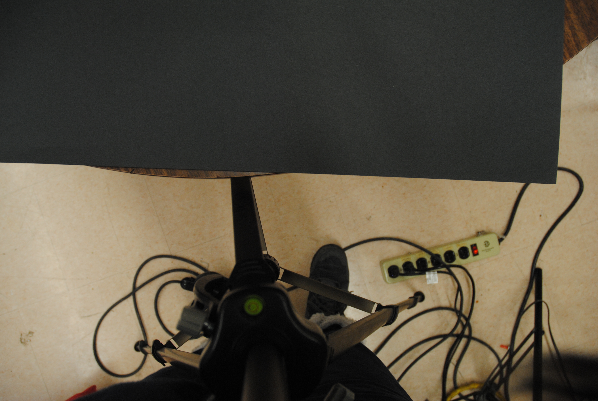
{kind=link}
↓雨滴担当的发票↓
(不过最后效果真的不是很好hhh)
普通的发票在摄影棚下都可以变得好看!!(；-；)
最后拖到软件中合着BGM就成啦.
【Crowd】
{kind=link}
{kind=link}
(土下座)因为今年的新年明信片就是那这张凑的,所以一点儿都不喜庆,真是对不住了…!!
在初期计划的时候就把电绘算进去了一张.不过最后怎么展示还是苦恼了很久.
【Flow】
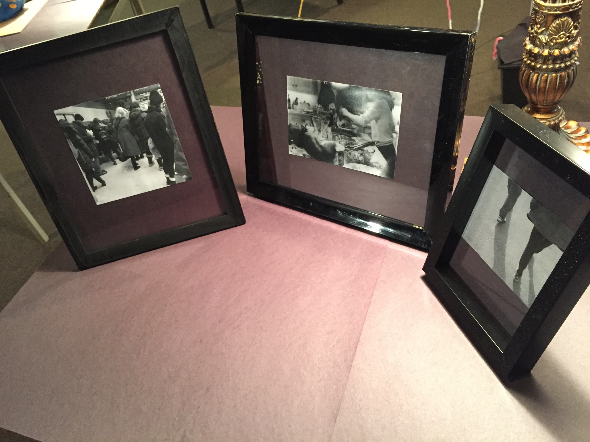
我的老师是摄影师,去年跟她学了摄影.
洗胶卷洗照片真的很有意思,而且我是喜欢能拿到手里的上世纪实物派,还是胶卷比较适合我.
不过隔了一个学期再挑战摄影还是觉得摄影太玄学了…作为一个本命担当R都抽不到的P还是早日放弃吧.
{kind=link}
↓不巧选了最冷的一天去大多村转了一圈,这是在火车站↓
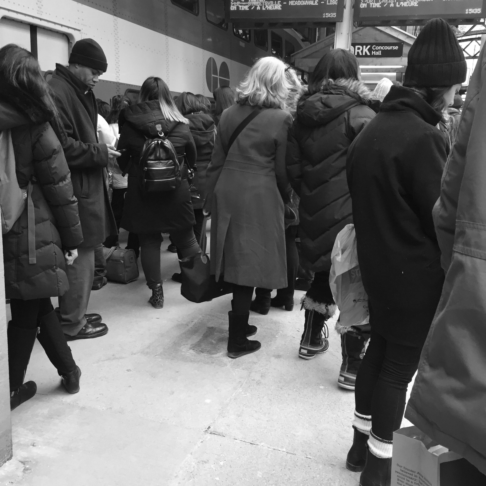
{kind=link}
↓圣诞节时的火鸡大餐↓
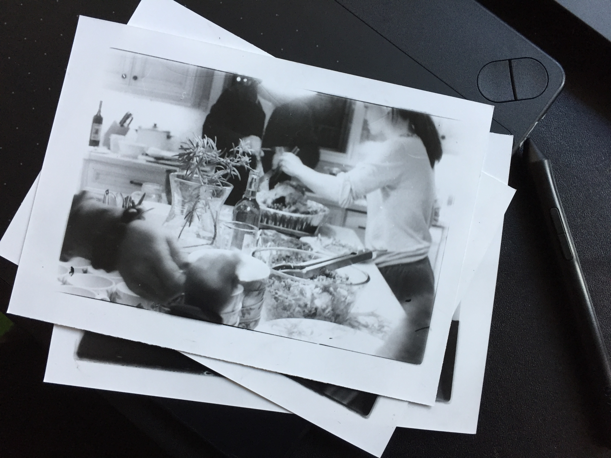
{kind=link}
{kind=link}
【Rest】
使用材料是黏土.最初的主题是躺在夜晚的公路上.更直白的原因是实现把自家女儿实体化一次.
然而公路没有成功赶上show(捶地.
赶这黏土的时候我的眼镜二代正好碎了,就拿它去凑了.
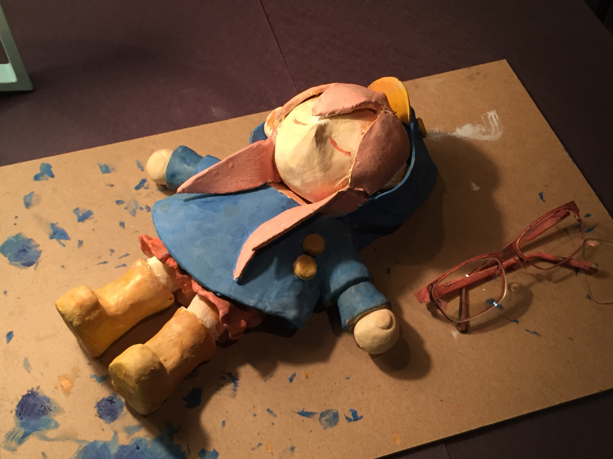
{kind=link}
拥挤的城市中能感到空旷的也许是大马路了吧.
还记得那次在世博会呆到夜晚毕园,从世博园回我的伯父的家.
走出来的时候半夜也没有车,一群人就走在大马路的正中间,享受着四轮的待遇.突然地就很想躺下来看星星,超惬意.
【Private Space】
这张有参考些构图
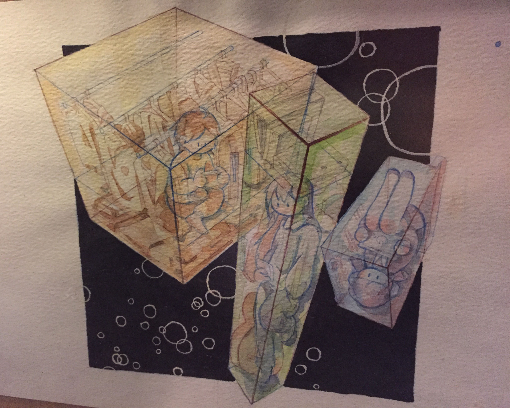
{kind=link}
水彩.应该是完全无关的人物然而手一顺就画了习惯的发型…可恶有些出戏.
狭窄的空间能给我安全感.甚至内心深处还有会相信钻到狭小的橱柜里能让时间都暂停.
一小会儿也好,想抛下家人钻到衣橱里打游戏,抛下学校藏到locker里看实况,抛下工作躲到行李箱里看电影.
在属于我的空间外的事情什么都不知道哦.
【Missing Half】
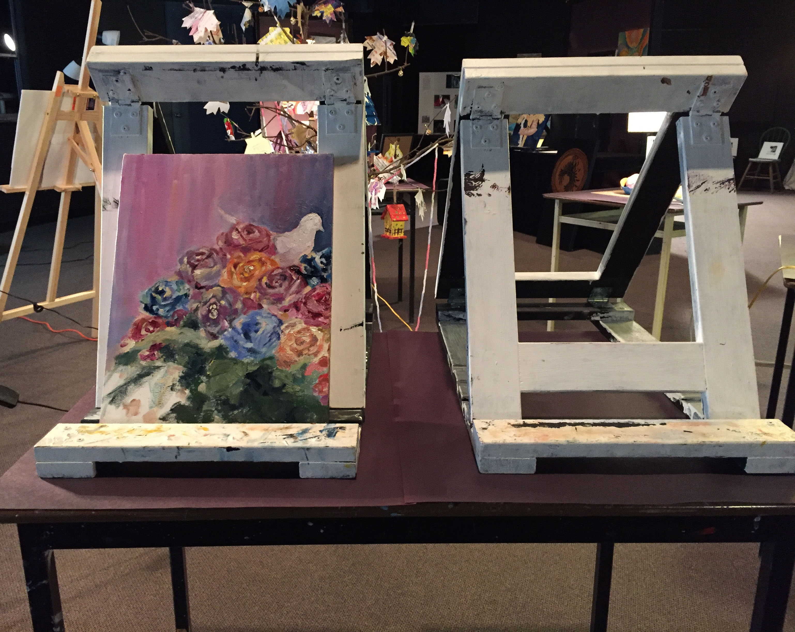
这幅是油画.油画比水彩亲民多了!!
想画的是孩子想象中婚礼的花.花花绿绿的,不大真实.
“长大后的梦想是成为新娘”这样的愿望经常可以在电视剧里看到呢(笑.
对配偶有着美好的憧憬.幻想着对方可能的优点,可能是温柔,可能是有趣,也可能很聪明.
但是当渐渐渐渐的,当年龄靠近那时的梦想时,或者是自己的朋友交上了男朋友,看着他们的打情骂俏,对自己的憧憬却模糊了.
等着的是到底什么呢.
{kind=link}
顺便一提我的幼时梦想是想挣钱.超简单直白.
【最后是那个抢镜的树】
和从一元店里买回来的树屋w.
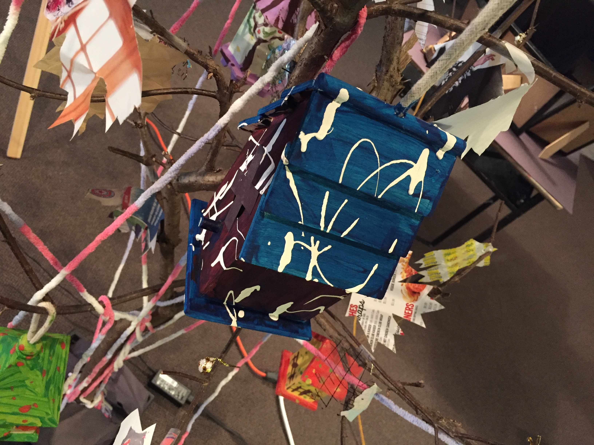
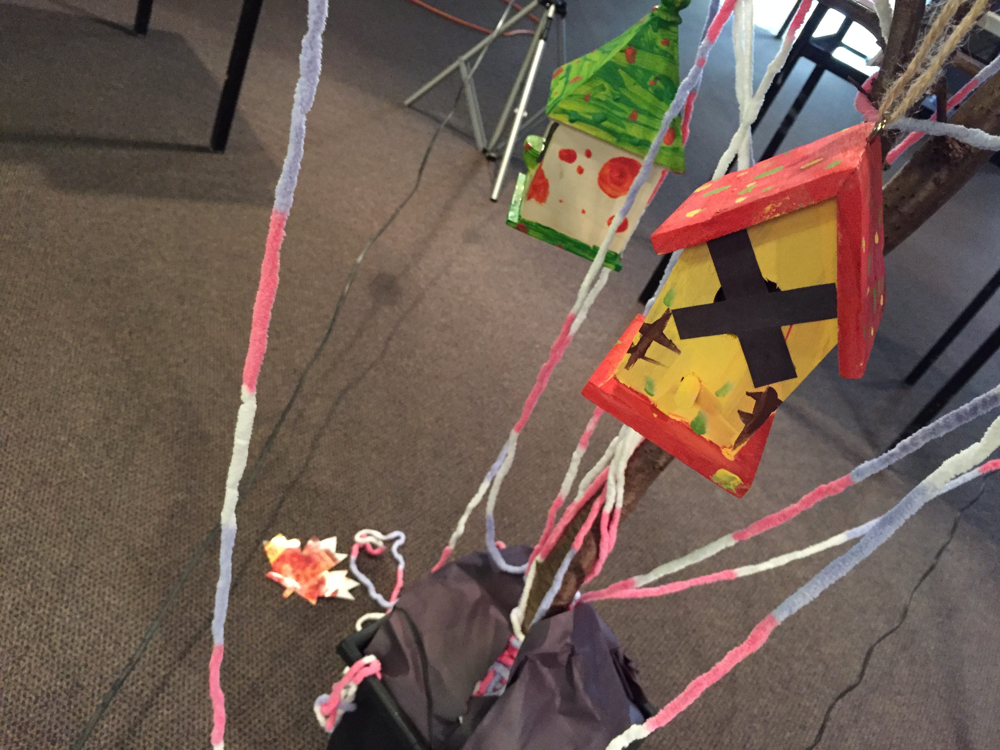
(可恶远看超乱的,近看倒是还行???布置的时候乱到我差点跪下来)
{kind=link}
{kind=link}
这个树是从家背后的树丛里抗回来的.
只是个布置,小时候就对树屋有莫名的热爱,也许是受小熊维尼的影响.
然后贴上了到处收集来的纸头,从博物馆里的传单到巧克力的包装纸,什么都有.我还剪掉了个老弟的地球仪x
围在桌子中间,不让人近距离观看.
有点像回不去的comfort zone吧.
以上就是全部了!!!非常感谢阅读.
12年级的美术课也上完了呢,有点寂寞.
最后是我的artist statement.
如果你跳过的话我给你总结一下,讲的是【大人的世界好难】.
I was born and raised in a crowded place.
When I was in my hometown, school represents most of my memories.
When the bell rang for lunch, people rushed down the stairs to the cafeteria and lined up and queues filled the hall. Every day it was a 500 metres race.
People wear the same uniforms and are divided into groups, lines, and squares.
People are like the ocean tide.
Mediocre was the philosophy of life, my Grade 10 art teacher wrote on the board the first day teaching us. She was right, in some ways. Not everyone can save the world.
I feel safe in that tide.
But where does that tide go?
People work as hard as possible to get into the school they want. Then, they get the job they want. Then, they get married. Then, hey buy a house, maybe 2 bed and 2 bath condo in the area which has the right school for kids in the future.
That anxiety and pushes me to move forward.
I grow up, learning to be polite, friendly and thinking about others. But nobody teaches us the meaning of marriage or money or hard work. No nobody teaches us about us.
And I am trying to question what I learn and what I see, but the tide never stops going.
I become a weirdo in the middle of the crowd.